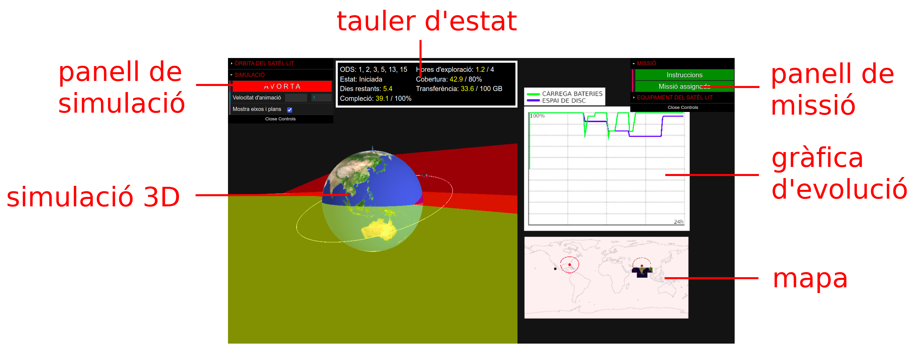

-
En aquesta activitat t’incorporaràs a una missió que has de completar amb l’ajut d’un satèl·lit artificial i una estació de seguiment virtuals.
-
Fes clic al botó Assignació de missió del panell desplegable de missió. S’obrirà una finestra emergent amb la fitxa descriptiva de la missió assignada. Llegeix la fitxa i navega seguint els enllaços per obtenir més informació sobre els fets que motiven la teva missió. També pots llegir-hi els criteris de compleció de la missió (temps d'observació sobre la zona, percentatge de cobertura i dades transferides a l'estació de seguiment).

EQUIPAMENT I ÒRBITA DEL SATÈL·LIT
-
A continuació, tanca la fitxa i fes clic al botó Sensors del panell de missió. S’obrirà una finestra emergent amb la taula de sensors. Selecciona els sensors que vulguis incloure en el satèl·lit, tenint present l'objectiu de la missió, el consum energètic i la despesa en espai d’emmagatzematge de dades (sota la taula hi ha els valors totals corresponents als valors triats).
-
Fes una estimació de l'equipament que necessites i escull el nombre d'untitats de disc (de 100 GB) i el de panells solars que vulguis equipar.
-
En el panell de simulació, assigna valors als elements orbitals del satèl·lit en funció dels objectius de la missió. Per coneìxer l'efecte de cada element en l'òrbita i en la trajectòria terrestre fes clic al botó Elements orbitals del panell. El panell mostra el període del satèl·lit corresponent als valors assignats.
-
Tingues en compte la zona d'estudi (delimitada per un traç de color marró en el mapa) i la posició de l'estació de seguiment amb la seva zona de proximitat (delimitada per un traç de color vermell en el mapa).
-
El satèl·lit obté i enregistra dades en la zona d’estudi i les transfereix a l'estació de seguiment.
INICI I MONITORITZACIÓ DE LA MISSIÓ
-
Per iniciar la missió prem el botó INICIA del panell de simulació. En el mateix panell pots canviar la velocitat d’animació. Plega després els panells per observar millor el moviment del satèl·lit i la gràfica d’evolució temporal d’energia i d’emmagatzematge.
-
Pots canviar el punt de vista i el nivell de zoom en la simulació central amb el botó esquerre i la roda del ratolí (la mida del satèl·lit no està a escala, es mostra més gran per facilitar l’observació).
-
El mapa mostra la posició del satèl·lit i la trajectòria terrestre. Comprova si el satèl·lit passa per la zona d’estudi i la cobreix totalment. En cas contrari, avorta la missió i torna-ho a provar.
-
La gràfica d’evolució temporal mostra com varia el percentatge de càrrega de les bateries (en color verd) i de l’espai d’emmagatzematge disponible (en color blau). Si les bateries es descarreguen totalment els sensors no funcionen, caldria equipar sensors menys exigents o augmentar el nombre de panells solars.
-
Si el satèl·lit no passa per la zona de proximitat de l’estació de seguiment les dades no es poden transferir a l’estació i s’ocuparà tot l’emmagatzematge disponible, caldria evitar-ho.
-
En el tauler d'estat pots comprovar el nivell de compleció de la missió. Si aconsegueixes completar-la abans que s'exhaureixi el temps assignat obtindràs un informe de la missió realitzada.